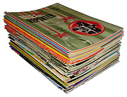
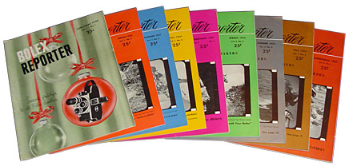
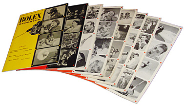
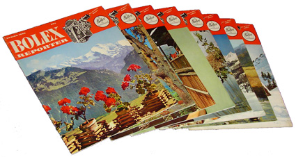
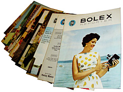
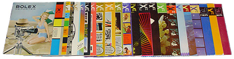

The Bolex Reporter Magazine
October 4, 2006 -- Michael Tisdale
I love collecting vintage magazines. Not just camera or photographic magazines,
but anything from news to entertainment and tabloid publications. The stories,
articles and photos always seem to give a better sense of the people and events
of the time period than anything found in history books.
Throughout the 1930s to the 1960s, there were many publications devoted to the hobby of home movies and amateur filmmaking. I've always enjoyed collecting and reading issues of Home Movies, Movie Makers, and others. They're a great source of information on cameras and products, as well.
Paillard Products of New York published their own magazine from 1950 to 1974 for owners of Bolex cameras. It offered advice and ideas to the amateur movie maker for getting the most out of their Bolex.

In 1950, the first issue of the Bolex Reporter was sent free of charge to anyone who had sent their registration card to Paillard Products Inc. of New York. The magazine was also sold in franchised Bolex dealer stores for 25 cents. Published quarterly, it included articles written by American and Swiss Paillard employees, as well as stories, tips and advice submitted from Bolex owners.
There were also recurring features, like "Bolexpressions" (letters to the editor), "Bolex Showcase" (a listing of the latest products), "Bolex News" and a short foreword from the editor, Thomas H. Elwell. Although focused on Bolex cameras and equipment, the Bolex Reporter used the slogan "For All Movie Makers". By Volume 3, Issue 1, the Bolex Reporter had reached a circulation of over 55,000.

Although still sent free to registered Bolex owners, the in-store price of the magazine increased to 35 cents with the Fall 1953 issue (Vol. 3, No. 4), as did the circulation; up to 63,000. It adopted a new cover layout, featuring a series of four film frames depicting pictures inside the issue.
In 1952, with three volumes in print, a special binder was made available to hold approximately 12 issues. It could be bought from any Bolex dealer for $3.00, and featured a strong spring clamp, gold embossed script and beige leather hard cover. A coupon was included in the Christmas 1953 issue (Volume 4, Number 1), as a special offer of only 95 cents. There are two versions of this binder: the first (top) has a rough "pigskin" leather cover with gold spine lettering, while the second (bottom) has a smooth cover made from laminated fabric but without spine lettering.

A new design was introduced to the Bolex Reporter for the Spring 1955 issue (Vol. 5, No. 2). At this point, copies were no longer sent free to registered Bolex owners. A subscription was required, or issues could be bought from Bolex dealer stores for 35 cents. Advertisements from camera shops during this period suggested many were given free as a courtesy to customers.
The magazine began to feature a full color cover and center art spread; all were from photos taken in Switzerland, home of Paillard-Bolex. This style continued until Christmas 1956 (Vol. 7, No. 1) - it was the last issue edited by Thomas H. Elwell and also meant the end of recurring features like "Bolexpressions" and editor forewords.

From Spring 1957 (Vol. 7, No. 2) to Fall 1960 (Vol. 10, No. 4), the Bolex Reporter had several different editors (Ted Russell, Les Barry and George Field). The magazine began to feature more color photos in the articles, as well as various models holding Bolex cameras on the cover.

In 1961, the Bolex Reporter became a bi-annual publication, beginning with Volume 11, Number 1. There were occasional "special editions": three Professional Issues; a series of supplements devoted to particular uses of certain model Bolex cameras; and Product Buying Guides. The final issue was published by Paillard Incorporated in 1974 - a total span of 24 volumes in as many years.
The Bolex Reporter was also published in French and German languages by Paillard S.A. of Switzerland. However, I have very little information on these magazines. If you happen to collect those issues or know more about them, please email me; I'd appreciate hearing from you.